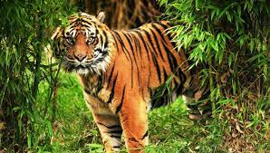

The mangrove-dominated Ganges Delta – the Sundarbans – is a complex ecosystem comprising one of the three largest single tracts of mangrove forests of the world. The larger part is situated in Bangladesh, a smaller portion of it lies in India. The Indian part of the forest is estimated to be about 40 percent, while the Bangladeshi part is 60 percent. To the south the forest meets the Bay of Bengal; to the east it is bordered by the Baleswar River and to the north there is a sharp interface with intensively cultivated land. The natural drainage in the upstream areas, other than the main river channels, is everywhere impeded by extensive embankments and polders. The Sundarbans was originally measured (about 200 years ago) to be of about 16,700 square kilometres (6,400 sq mi). Now it has dwindled into about one-third of its original size. The total land area today is 4,143 square kilometres (1,600 sq mi), including exposed sandbars with a total area of 42 square kilometres (16 sq mi); the remaining water area of 1,874 square kilometres (724 sq mi) encompasses rivers, small streams and canals. Rivers in the Sundarbans are meeting places of salt water and freshwater. Thus, it is a region of transition between the freshwater of the rivers originating from the Ganges and the saline water of the Bay of Bengal.[21]
Sundarbans (pronounced /sʌnˈdɑːrbənz/) is a mangrove area in the delta formed by the confluence of the Padma, Brahmaputra and Meghna Rivers in the Bay of Bengal. It spans the area from the Baleswar River in Bangladesh's division of Khulna to the Hooghly River in India's state of West Bengal. It comprises closed and open mangrove forests, land used for agricultural purpose, mudflats and barren land, and is intersected by multiple tidal streams and channels. Sundarbans is home to the world's largest area of mangrove forests.[3] Four protected areas in the Sundarbans are enlisted as UNESCO World Heritage Sites, viz. Sundarbans West (Bangladesh), Sundarbans South (Bangladesh), Sundarbans East (Bangladesh) and Sundarbans National Park (India).[4] Despite these protections, the Indian Sundarbans were considered endangered in a 2020 assessment under the IUCN Red List of Ecosystems framework.[5] The Sundarbans mangrove forest covers an area of about 10,000 km2 (3,900 sq mi), of which forests in Bangladesh's Khulna Division extend over 6,017 km2 (2,323 sq mi) and in West Bengal, they extend over 4,260 km2 (1,640 sq mi) across the South 24 Parganas and North 24 Parganas districts.[6] The most abundant tree species are sundri (Heritiera fomes) and gewa (Excoecaria agallocha). The forests provide habitat to 453 fauna wildlife, including 290 bird, 120 fish, 42 mammal, 35 reptile and eight amphibian species.[7] Despite a total ban on all killing or capture of wildlife other than fish and some invertebrates, it appears that there is a consistent pattern of depleted biodiversity or loss of species in the 20th century, and that the ecological quality of the forest is declining.[8]